Core Planning II – Command and Control the Cube
Core Planning II – Command and Control the Cube
Directing OneStream Planning
The Core Planning I chapter examined the Cube core of Planning in OneStream. This chapter continues in that vein of detailed exploration of Cube functionality and how you, Gentle Reader, can best expand its potential through XFBR Business Rules, understand ostensibly simple Scenario Workflow, and define vital data security through Conditional Input, Entity read-write, and Data Cell Access Security.
As before, this chapter is thematically organized but can be read individually by subject. Are you sitting comfortably? Then let us begin.
Core Planning II – Command and Control the Cube
I’ve Got the World on a String
The ability to drive behavior in OneStream through programmatically-driven strings seems (on its surface) to be a minor capability – but just what value are short text strings to a numerically-oriented database? In fact, the ability to create string values on the fly is an incredible boon – not for directly displaying text in a Cube View or Dashboard – but instead for dynamically driving practically everything OneStream.
If a property in OneStream is a string (practically everything is) and if those properties are ubiquitous throughout the product (they are), the ability to intelligently drive them to reflect business and system conditions without Planner or Administrator intervention is a huge advantage that few if any of OneStream’s competitors can match. Understanding and exploiting this opportunity wherever possible is a perspective and practice that all OneStream developers must adopt if they wish to fully benefit from OneStream’s power. How is it done? In a word: XFBRs.
Core Planning II – Command and Control the Cube › I’ve Got the World on a String
What’s In a Name?
A note about OneStream’s Business Rules taxonomy: XFBRs are Dashboard String Function Business Rules that return strings. What “XFBR” stands for, beyond the now-deprecated “XF” part of the product name, is a mystery to all and sundry. Was it the first kind of Business Rule (the last two BR characters in XFBR)? That seems unlikely given the central role of Finance Business Rules. A lack of imagination on the part of OneStream’s architects and developers? Given OneStream’s depth and breadth and the 11 different kinds of Business Rules and the eight different Event Handlers, the notion that a Rule Type name that consumes the product and feature names seems just as unlikely.
Whatever the name’s genesis, do not be confused: XFBR Business Rules replace manually entered hard-coded text with code-driven output. Given that Member names and filters, Business Rule names, parameters, and practically every other property in OneStream are textual, the opportunities for dynamic string substitution through XFBR code are abundant. It is a powerful feature and one that any well-formed OneStream application will use to the utmost because XFBRs will make that application robust, dynamic, and low maintenance.
Core Planning II – Command and Control the Cube › I’ve Got the World on a String › What’s In a Name?
Piece by Piece
To call an XFBR, use this format: BRString(rulename, functionname, param1=param1value, param2=param2value, paramn=paramnvalue). The XFBR name is required, as is the function name (more anon). Optional parameters are defined in a comma-delimited list. Parameters can be used in lieu of param<n>value, using |! and !| symbols to delineate a parameter name. Substitution Variables can also be used using | and | symbols as identifiers. Functions are required even if an XFBR has only one function.
Core Planning II – Command and Control the Cube › I’ve Got the World on a String › What’s In a Name?
An XFBR is a BRString is an XFBR
XFBR Business Rules can be called using either XFBR or BRString. This chapter will use
BRString to differentiate between a command and the Rule Type.
Core Planning II – Command and Control the Cube › I’ve Got the World on a String
Multiple Function XFBR Unit Versus Regression Testing
A Business Rule (XFBRs included) that contains more than one function should – were OneStream developers to adhere to professional software development practice – be fully regression-tested whenever a single function is changed. That means, in practical terms, changing or adding a single function to a multi-function Business Rule should trigger testing for all of the functions that are in the XFBR.
Gentle Reader, before you scoff (or despair at the workload) at this approach, inadvertently changing a line of code in any of the functions (including the one that you, pinky-promise, was untouched by human hands) in an XFBR – even by a single character – is enough to break that code and, if it compile checks successfully, will not reveal itself until it is called because VB.Net treats everything inside double quotes as a String, and a String cannot be checked for validity.
Given the common practice of multiple functions per Business Rule – your author has observed this code style in every Business Rule that supports function branching – you must test all of the functions in your code when you make a code change in any function in the Business Rule. Really. You Have Been Warned.
Core Planning II – Command and Control the Cube › I’ve Got the World on a String
Driving Excel
The Principles Chapter covered the OneStream Excel add-in and its (generally) powerful functionality as well as its (minor but still annoying) missing features, particularly the one around the inability to support asymmetrical columns. Asymmetric row and column retrieves are possible if a multidimensional Member script is employed in a Member Filter.
The Excel add-in supports asymmetrical row and column selection through concatenated multidimensional Member Filters, e.g., a Time Member Filter of: T#2021M1:S#Actual:Name(2021M1 Actual), T#2021M2:S#Actual:Name(2021M2 Actual), T#2021M3:S#Plan:Name(2021M3
Plan)returns an asymmetrical column retrieve that retrieves both Actual and Plan where the Quick View POV is Actual-only.
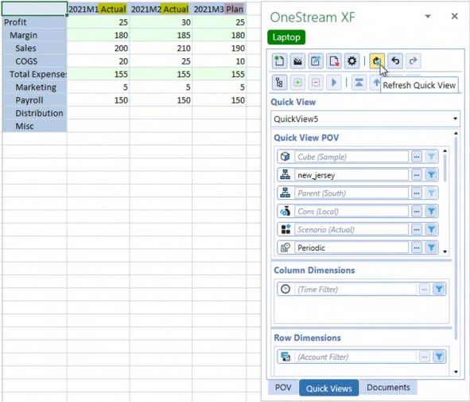
Figure 3.1
This approach, however, requires the Planner to understand how to create cross-dimensional partial tuples, how the Name() function works, and the importance of matching a replacement description with the Member tuple. Moreover, if this was a quarterly Report, the cross-dimensional tuple and alias must follow the march of Actuals across the year. While this is certainly possible for a single analyst within a single Quick View, a correct Member Filter across multiple Quick Views and for more than one analyst is unlikely given the complexity and maintenance requirements.
Core Planning II – Command and Control the Cube › I’ve Got the World on a String › Driving Excel
From a Quarter Whisper to a Year Scream
This issue around Planner comprehension, maintenance effort, and error potential becomes more problematic when the common use case of a 12-month mixed Actual and Plan Quick View is examined.
Following the same multidimensional tuple approach, this Member Filter – T#2021M1:S#Actual:Name(2021M1 Actual), T#2021M2:S#Actual:Name(2021M2 Actual), T#2021M3:S#Plan:Name(2021M3 Plan), T#2021M4:S#Plan:Name(2021M4 Plan), T#2021M5:S#Plan:Name(2021M5 Plan), T#2021M6:S#Plan:Name(2021M6 Plan), T#2021M7:S#Plan:Name(2021M7 Plan), T#2021M8:S#Plan:Name(2021M8 Plan), T#2021M9:S#Plan:Name(2021M9 Plan), T#2021M10:S#Plan:Name(2021M10 Plan),T#2021M11:S#Plan:Name(2021M11 Plan), T#2021M12:S#Plan:Name(2021M12
Plan) – produces a 12-month column set that shows a 2021M3 Plan start:
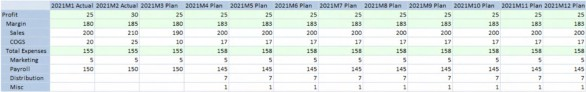
Figure 3.2
As time passes in the year, and Plan months are replaced by Actuals, the Planner will have to edit the Time and Scenario Dimensions as well as the Name property.
Core Planning II – Command and Control the Cube › I’ve Got the World on a String › Driving Excel › From a Quarter Whisper to a Year Scream
A Better Way
What this hypothetical Planner needs is a dynamic, parameterized, and system-driven approach. An XFBR can do exactly this while making the Time Dimension Member Filter simple and, once used, maintenance-free.
This XFBR Business Rule must create a 12-column Member Filter that mixes Actual and Plan using the T#time:S#scenario:Name(alias) Member definition.
To do this, the XFBR Business Rule must:
Accept a four-digit year parameter.
Accept a Scenario name parameter.
Read a Dashboard Literal Parameter value that defines the current Forecast Time in YYYYMm(m) format.
Compare the XFBR year parameter with the Literal Parameter Forecast Time’s year.
If the XFBR year parameter is not equal to the Literal Parameter Forecast Time’s year, return the 12 months of the parameter year.
If the XFBR year parameter is equal to the Literal Parameter Forecast Time’s year, create a 12-month Member list that:
Concatenates
S#Actualfor all Time periods before the Literal Parameter value.Concatenates
S#scenarionameto all Time periods equal to or greater than the Literal Parameter value.
Core Planning II – Command and Control the Cube › I’ve Got the World on a String › Driving Excel › From a Quarter Whisper to a Year Scream › A Better Way
The XFBR Member Filter
This is it: BRString(Book_ParamHelper, MixedYear, Year = 2021, Scenario = Plan).
Book_Parameter Code
There are two sections to the XFBR Business Rule Book_Parameter: Public Function Main and Private Function functionname.
Public Function Main
This fires when the XFBR is called, and branches based on the passed function name to the private function that performs the logic.
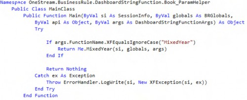
Calling MixedYear
The If test for args.FunctionName.XFEqualsIgnoreCase("MixedYear") tests for the function name and then calls the function by Me.MixedYear.
The Return Me.functionname(si, globals, args) directs the class to branch to the function and then passes the result of that function back to the calling Component, which – for this use case – is the Excel add-in Member Filter. Unlike Finance Business Rules, the Return statement here is significant because it passes the string result to the calling Component, which could be a Dashboard button, a Cube View column, or anywhere a String is supported.
If args.FunctionName.XFEqualsIgnoreCase("MixedYear") Then Return Me.MixedYear(si, globals, args)The SessionInfo, BRGlobals, and DashboardStringFunctionArgs arguments are required for this Rule to work. Depending on the function’s requirements, only SessionInfo is required; the commonly used API is absent from this example.
Variables and Parameters
The Year and Scenario passed as parameters are assigned to string variables using the args.NameValuePairs.XFGetValue("parametername") Method.
The Dashboard Literal Parameter ForecastMonth is queried via BRApi.Dashboards.Parameters.GetLiteralParameterValue(si, False, "literalparametervalue").
OneStream supports many kinds of parameters, of which a Literal Value Type is the simplest, being a parameter name and a text value.
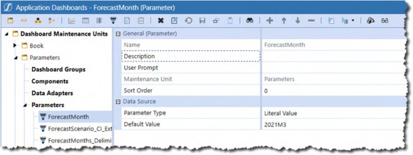
Figure 3.3
Consider organizing parameters that are used across multiple functions in a OneStream application within a separate Dashboard Maintenance Unit.
Dim strYear As String = args.NameValuePairs.XFGetValue("Year") Dim intYear As Integer = CInt(strYear)
Dim strScenario As String = args.NameValuePairs.XFGetValue("Scenario") Dim strForecastMonth As String = BRApi.Dashboards.Parameters.GetLiteralParameterValue(si, False, "ForecastMonth")
Dim intForecastYear As Integer = CInt(Left(strForecastMonth, 4))Declare and value Time variables for comparison and looping. While value tests of numbers as strings are possible (the string “1967” is less than the string “1980”), your author is driven bonkers by strings-as-numbers for value testing, and so converts string numbers like calendar years to integers.
Dim strTime As New List(Of String)
Dim intMonth As Integer = Right(strForecastMonth,2).Replace("M","")Forecast Year Less Than Parameter Year
If the ForecastMonth Literal Parameter’s year is less than the XFBR Year parameter, year is pure (in this example, as that is the XFBR Scenario value) Plan. Return the months of the XFBR Year cross-dimensioned to the XFBR Scenario; use the XFBR Scenario in the Name property.
A simple loop is used to concatenate the 1-based counter to the year.
If intForecastYear < intYear Then For intKount As Integer = 1 To 12
strTime.Add("T#" & strYear & "M" & intKount.ToString & ":S#" & strScenario & ":Name(" & strYear & "M" & intKount.ToString & "-" & strScenario & ")")
Next intKountForecast Year Greater Than Parameter Year
If the ForecastMonth Literal Parameter’s year is greater than the XFBR Year, the year is pure Actual. Return the months of the XFBR Year cross-dimensioned to Actual; use Actual in the Name property.
Else If intForecastYear > intYear Then For intKount As Integer = 1 To 12
strTime.Add("T#" & strYear & "M" & intKount.ToString & ":S#Actual:Name(" & strYear & "M" & intKount.ToString & "-" & "Actual)")
Next intKountForecast Year is the Same as the Parameter Year
If the ForecastMonth Literal Parameter’s year is the same as the XFBR Year, the year is a mix of Actual and (again, this example’s passed Scenario) Plan.
Within the loop of the months, if the counter value is greater than or equal to the ForecastMonth Literal Parameter’s month, the period is Plan, the XFBR Year is cross-dimensioned to the XFBR Scenario; use the XFBR Scenario in the Name property. If the counter value is less than the ForecastMonth Literal Parameter’s month, the period is Actual, the XFBR Year is cross-dimensioned to Actual; use Actual in the Name property.
ElseIf intForecastYear = intYear Then For intKount = 1 To 12
If intKount >= intMonth Then
strTime.Add("T#" & strYear & "M" & intKount.ToString & ":S#" & strScenario & ":Name(" & strYear & "M" & intKount.ToString & "-" & strScenario & ")")
Else
strTime.Add("T#" & strYear & "M" & intKount.ToString & ":S#Actual:Name(" & strYear & "M" & intKount.ToString & "-" & "Actual" & ")")
End If Next intKount
End IfReturning the Result
A 12-element List(Of String) has been created, whatever the condition branching. The OneStream add-in requires a string. Use String.Join to return a comma-delimited list to the calling Quick View Member Filter via the Main function.
Return String.Join(",", strTime)
When writing XFBRs, an easy check to see if the desired string has been generated is a write to the Error Log. Be sure to remove or comment out any writes after testing.
brapi.ErrorLog.LogMessage(si, string.Join(",", strTime))
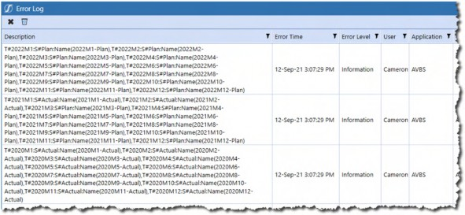
Figure 3.4
Note that XFBRs must use the brapi.ErrorLog.LogMessage Method.
ParamHelper
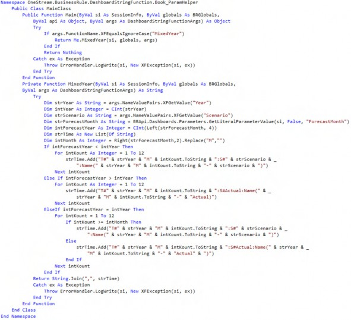
Core Planning II – Command and Control the Cube › I’ve Got the World on a String › Driving Excel › From a Quarter Whisper to a Year Scream
So, What Do We Have?
A combination of the Dashboard Literal Parameter ForecastMonth with the XFBR function MixedYear results in a dynamic, maintenance-free (except for the setting of ForecastMonth) and simple way of creating an asymmetric Time/Scenario column set.
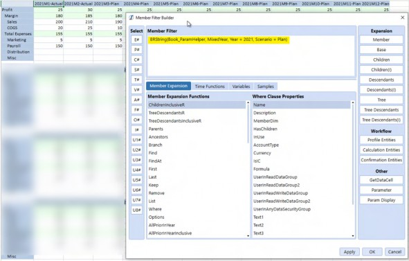
Figure 3.5
Core Planning II – Command and Control the Cube › I’ve Got the World on a String › Driving Excel › From a Quarter Whisper to a Year Scream › So, What Do We Have?
Simpler and Simpler
An XFBR returns a string. The definition of an XFBR within a calling object is a string. A Literal Parameter is a variable that substitutes a string. A Literal Parameter that is the string that calls the XFBR Rule can be used in a Member Filter (as well as everywhere an XFBR is valid).
The Literal Parameter PlanMonths has a Default Value of BRString(Book_ParamHelper, MixedYear, Year = 2021, Scenario = Plan).
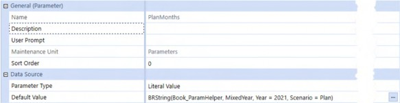
Figure 3.6
It can be called within the Excel add-in Member Filter as |!PlanMonths!|:
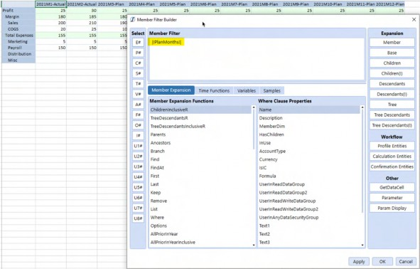
Figure 3.7
A 14-character parameter is significantly more dynamic, maintenance-free, and simple than a 432-character Time/Scenario/Name Member list.
Core Planning II – Command and Control the Cube › I’ve Got the World on a String › Driving Excel
Using XFBRs in Excel
XFBRs within Excel are but one use case for this powerful and flexible Business Rule Type. A small amount of code can drive a large amount of functionality. The application of XFBRs within OneStream applications is almost boundless and is limited only by our collective imagination.
Core Planning II – Command and Control the Cube › I’ve Got the World on a String
Consolidating in a Multi-Year Workflow
Core Planning II – Command and Control the Cube › I’ve Got the World on a String › Consolidating in a Multi-Year Workflow
Month by Month by Month
Actual-Type Scenarios typically have a Workflow Tracking Frequency of All Time Periods. This results in a month-by-month Workflow:
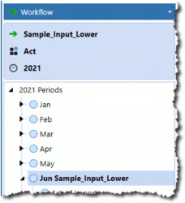
Figure 3.8
Consolidating the current Workflow month is both logical in that Actual data is by month, and easy because the |WFTime| system Substitution Variable drives the Time Member.
Running this Data Management Step when 2021M6 is selected in Workflow…
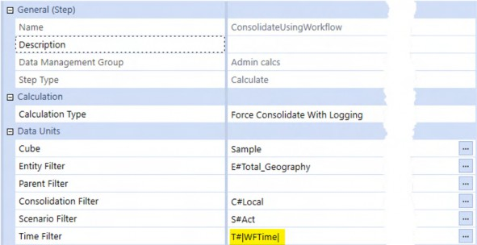
Figure 3.9
…results in T#2021M6’s Consolidation.
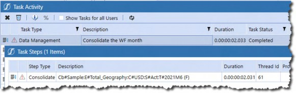
Figure 3.10
This native approach fulfills the monthly Consolidation requirement because |WFTime| returns both the year and the month, cf. the example above, which returns 2021M6.
Core Planning II – Command and Control the Cube › I’ve Got the World on a String › Consolidating in a Multi-Year Workflow
Range and Yearly
A single-year Forecast and Budget spans all 12 months; multi-year Planning goes to 24 and beyond. These Plan Scenarios will have a Workflow Tracking Frequency of Range or Yearly.
A single-year Plan range can use T#|WFYear|M12 to drive that year’s Time Consolidation range.
Once more than one year is used in the Workflow, T#|WFYear| cannot return the correct Time Dimension Member range because the Substitution Variable returns only the first year of the Workflow.
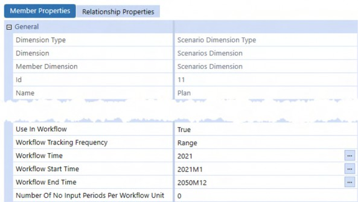
Figure 3.11 When the Plan Scenario is selected in OnePlace:
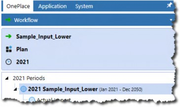
Figure 3.12
Core Planning II – Command and Control the Cube A Force Consolidate With Logging step using |WFYear| to drive the M12 Time period…
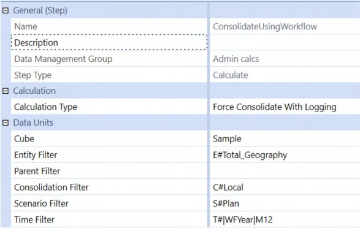
Figure 3.13
…will result in 2021-only as the Consolidation timespan:
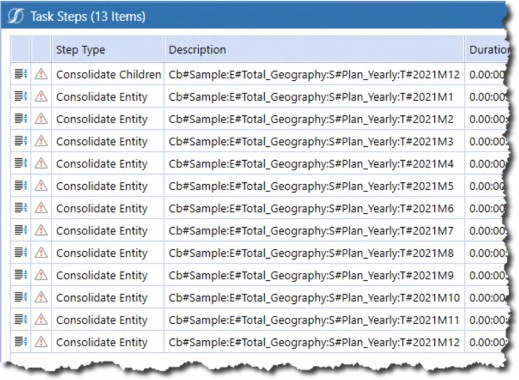
Figure 3.14
What is needed is a way to address two or more years. The solution is an XFBR Rule.
1 + 1 = 2
Workflow drives the first year of the Plan Consolidation range. To derive this second year, the XFBR Rule must:
Read the current year from the Workflow as called by a Data Management Step.
Convert the Workflow year into an integer.
Add n years to the start year.
Concatenate “M12” to the years.
Return the years in a comma-delimited list with a leading “T#” and a trailing “M12”.
Core Planning II – Command and Control the Cube › I’ve Got the World on a String › Consolidating in a Multi-Year Workflow › Range and Yearly
XFBR Calling
Call the XFBR within a Data Management Step with:
BRString(Book_ParamHelper, M12sForAgg, Year = |WFYear|, NumberOfYears
= 2)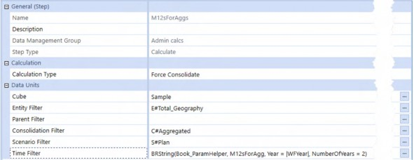
Figure 3.15
The XFBR Business Rule Book_ParamHelper is the first parameter, the second is the M12sForAgg function name, the third is the start year (in this case |WFYear| but it could be any four-digit year, and the last is the number of years to consider.
In Book_ParamHelper
Core Planning II – Command and Control the Cube › I’ve Got the World on a String › Consolidating in a Multi-Year Workflow › Range and Yearly › XFBR Calling
Calling M12sForAgg in Public Function Main
The If…Then...Else test is expanded to handle the new M12sForAgg function:
If args.FunctionName.XFEqualsIgnoreCase("MixedYear") Then Return Me.MixedYear(si, globals, api, args)
ElseIf args.FunctionName.XFEqualsIgnoreCase("M12sForAgg") Then Return Me.M12sForAgg(si, globals, args)
End IfCore Planning II – Command and Control the Cube › I’ve Got the World on a String › Consolidating in a Multi-Year Workflow › Range and Yearly › XFBR Calling
Private Function M12sForAgg
The function must be declared within the overall XFBR Business Rule. XFBRs return strings to their calling object, so the function is typed as String.
Private Function M12sForAgg(ByVal si As SessionInfo, ByVal globals As BRGlobals, ByVal args As DashboardStringFunctionArgs) As String
Variables and Parameters
The Year and NumberOfYears string parameters (all parameters are strings) must be queried and then converted to integers, as they will be used as start year and an outer bound of a For...Next loop.
Dim intYear As Integer = CInt(args.NameValuePairs.XFGetValue("Year")) Dim intYearCount As Integer = CInt(args.NameValuePairs.XFGetValue("NumberOfYears"))
Dim strTimeFilter As New List(Of String)Just The One
If the range is only one year, then the Year parameter has no further string manipulation other than a prefixed “T#” and a trailing “M12”. The Time Filter single year string is now ready to be added to the return list.
If intYearCount = 1 Then strTimeFilter.Add("T#" & intYear & "M12")
ElseGreater Than One
If the NumberOfYears parameter is more than one, loop from the Year parameter’s value for the number of years specified. This must be a zero-based loop to include the start year, so the end loop limit must be the NumberOfYears less one.
Dim intKounter As Integer
For intKounter = 0 To intYearCount - 1 strTimeFilter.Add("T#" & intYear + intKounter & "M12") Next intKounter
End If
Return String.Join(",", strTimeFilter)A List(Of String)reflecting the NumberOfYears has been created, whatever the condition branching. The Data Management Time Filter requires a string. Use String.Join to return a comma-delimited list to the calling Data Management Step via the Main function.
ParamHelper
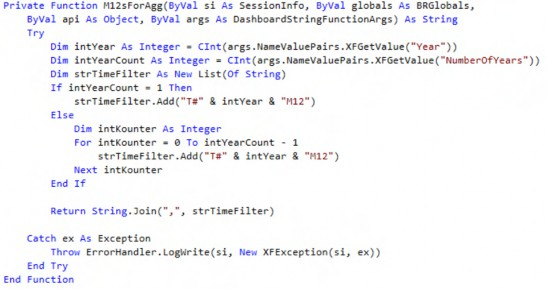
Core Planning II – Command and Control the Cube › I’ve Got the World on a String › Consolidating in a Multi-Year Workflow › Range and Yearly › XFBR Calling
So, What Do We Have?
The XFBR function M12sForAgg aggregates 2021 and 2022, given the start year of 2021 and the number of years count of two.
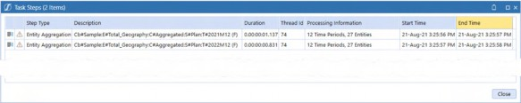
Figure 3.16
What Do We Really Have?
In XFBR Business Rules, we have a tool that can programmatically drive practically every text property in OneStream (and even the Excel add-in). This dynamic code-driven nature means that systems are more flexible, powerful, and maintenance-free. XFBR Business Rules are powerful, flexible, and robust Methods that transform applications. Use them wherever you can.
Core Planning II – Command and Control the Cube
Shattering Scenario Workflow Shibboleths
| Note: This section concerns itself with monthly Forecasts; however, the recommendations hold true for all Plan Scenarios. Also, the below use cases run within the context of application Allow Loads Before/After Workflow View Year properties set to True. |
The use case for loaded Plan data is invariably more than one month because Plans have a perspective of all of the months in a year or across multiple years. This multi-month and multi-year orientation has a significant impact on how Workflow must be configured.
Core Planning II – Command and Control the Cube › Shattering Scenario Workflow Shibboleths
A Word to The Wise
This section will – hopefully – encourage you to play with Scenario Workflow properties. Know that if any sort of Workflow processing has occurred in a Scenario, changes to Workflow properties will produce an error message like the one below (this is on a change from a Workflow End Time from 2050M12 to 2100M12).
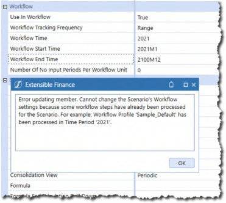
Figure 3.17
To successfully change this value, the Scenario must be Reset via a Data Management Step, which will completely erase all of the loaded, inputted, and calculated data in the Scenario. Data Management’s Copy Data function can copy both Stage and Cube data to a backup Scenario; a custom Finance Business Rule can do the same but only for Cube data.
| Note: Other Scenario properties within an already processed Workflow may allow a change and save within the Dimension editor but not actually take effect. |
Be sure to reset the Scenario before making any changes.
Core Planning II – Command and Control the Cube › Shattering Scenario Workflow Shibboleths
Just The One
The common Workflow Tracking Frequency for Actual data is All Time Periods; it is the default for any new Scenario. What is ideal for Actual data – data that is loaded one month at a time as business transactions occur – fails for Plan data that spans more than a month.
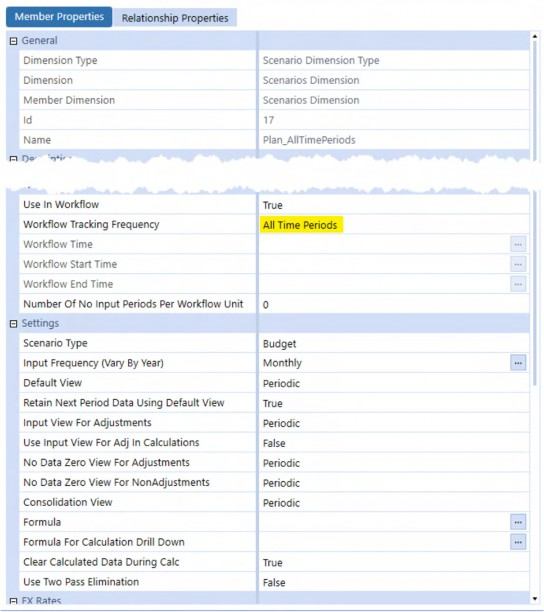
Figure 3.18
Note how the Default View, Input View For Adjustments, No Data Zero View For Adjustments, and No Data View for NonAdjustments are all set to Periodic; these all default to YTD on Scenario creation. As Planning data is at a monthly level, set these properties to their correct Periodic value.
If the Scenario has been processed in Workflow, the Scenario must be Reset via a Data Management Step to allow property changes to “stick”, e.g., properties like Default View can be changed, but they will not take effect if that is not done.
Core Planning II – Command and Control the Cube › Shattering Scenario Workflow Shibboleths › Just The One
Month by Month
All Time Periods results in a monthly view of Workflow:
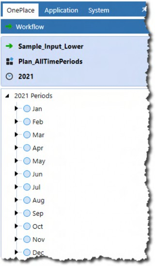
Figure 3.19
Core Planning II – Command and Control the Cube A single-month data file, as shown below, will load just that month.
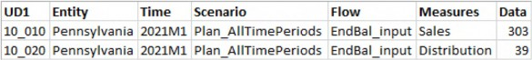
Figure 3.20
OnePlace shows a successful data load:
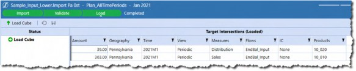
Figure 3.21
As does a Quick View retrieve:
Figure 3.22
Core Planning II – Command and Control the Cube › Shattering Scenario Workflow Shibboleths › Just The One
In The Wrong Place, At The Wrong Time
After running a Reset Scenario, what happens if that January data is inadvertently loaded through February?
The answer, in February at least, is nothing or at least apparently so:
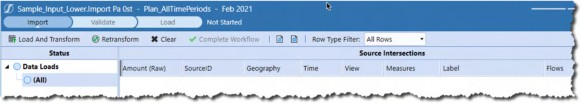
Figure 3.23
When January is opened in OnePlace, it shows that data was, in fact, imported but is not visible in February.
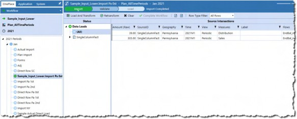
Figure 3.24
Logically enough, data cannot be loaded to the Cube in February because the data is, in fact, January’s and the import process took place in February’s Workflow.
Core Planning II – Command and Control the Cube › Shattering Scenario Workflow Shibboleths › Just The One › In The Wrong Place, At The Wrong Time
Wrong Again, This Time More Than Once
A multiperiod data file – one that is far more likely to be used in a Planning Scenario – evinces a similar mismatch between the selected Workflow month and where data can be loaded to the Cube.
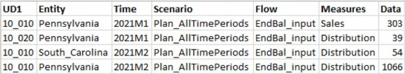
Figure 3.25
On load, the 2021M1’s and 2021M2’s data is imported to the right months but must be validated and loaded from the right Workflow time. In the above example, the validation and load process must be performed twice. This behavior extends to multi-year data loads.
Core Planning II – Command and Control the Cube › Shattering Scenario Workflow Shibboleths › Just The One
When Direct Load Fails
The above examples use the traditional Import Method. What happens when more than one month is loaded using the new (and recommended) Direct Load Method?
When loaded from January, that four record 2021M1 and 2021M2 data file does not throw an error message and does not load more than January’s data.
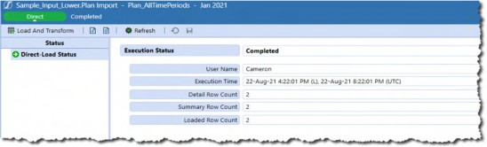
Figure 3.26
There is no option in February’s Workflow to load data to the Cube, which is not surprising given that Direct Load’s behavior is to load data directly to the Cube.
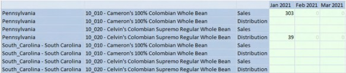
Figure 3.27
Core Planning II – Command and Control the Cube › Shattering Scenario Workflow Shibboleths › Just The One
Just Don’t
It would be a very unusual Planning data load pattern that purposely loaded data a month at a time. This approach also has a high potential for error in that a Planner or Administrator may mistake where data is loaded.
Do not use a Workflow Tracking Frequency of All Time Periods when loading Plan data.
Core Planning II – Command and Control the Cube › Shattering Scenario Workflow Shibboleths
The Yearling
Multiple month data loads make more sense with a Workflow Tracking Frequency of Yearly. The below use cases have Plan_Yearly as their Scenario.
The Plan_Yearly data file now has two months of 2021 data.
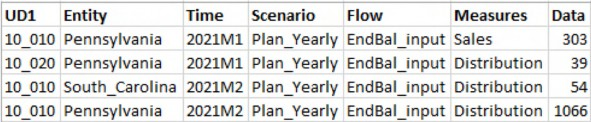
Figure 3.28
Core Planning II – Command and Control the Cube › Shattering Scenario Workflow Shibboleths › The Yearling
Now It’s Working
An Import in 2021 results in 2021M1 and 2021M2’s data load in OnePlace.
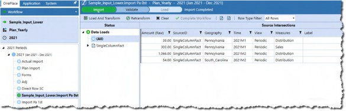
Figure 3.29
The data appears in a Quick View as well.
Figure 3.30
The same holds true for Direct Import.
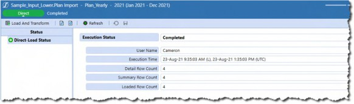
Figure 3.31
Unlike the All Time Periods Workflow Tracking Frequency, a Yearly one loads across months within a single year. If an application’s Budget is only a single year, a Yearly frequency is appropriate.
However, many Plans are either rolling or simple multi-year Forecasts. Does Yearly correctly span years on a multi-year data load?
Core Planning II – Command and Control the Cube › Shattering Scenario Workflow Shibboleths › The Yearling
New Import, Same Old Import
It does not. It behaves just like All Time Periods, except across years instead of months.
Given the two-year data file, Import allows a data load in 2021 and 2022, displays only the current year’s data, imports the data to the other year, and requires two validate and load steps to the Cube.
Import in 2021 shows only 2021M2.
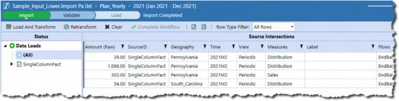
Figure 3.32 A load to the Cube in 2021 does not load 2022 data.
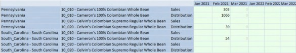
Figure 3.33 2022’s data records show in 2022’s OnePlace.
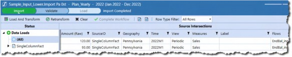
Figure 3.34
A second load to the Cube populates 2022.
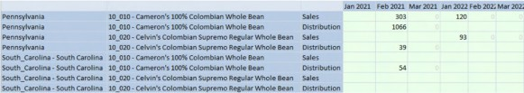
Figure 3.35
Core Planning II – Command and Control the Cube › Shattering Scenario Workflow Shibboleths › The Yearling
Data Load Across Years
Direct Load behavior is the same across years in a Yearly Workflow Tracking Frequency as in across months in All Time Periods. As with Import, no error is thrown when 2022’s data is not loaded.
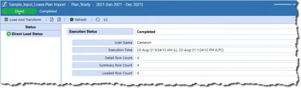
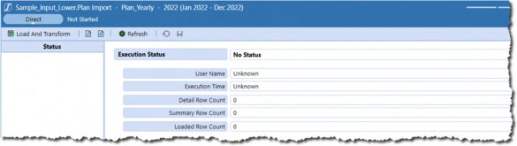
Figure 3.36 2022’s Data Load appears to not be processed.
Figure 3.37
This is confirmed in Excel.
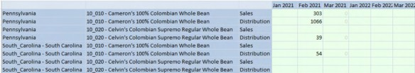
Figure 3.38
What to do?
Core Planning II – Command and Control the Cube › Shattering Scenario Workflow Shibboleths
The Multi-Year Home On The Range
The way – the only way – to handle multi-year data loads in Planning applications is through the
Range Workflow Tracking Frequency.
Core Planning II – Command and Control the Cube › Shattering Scenario Workflow Shibboleths › The Multi-Year Home On The Range
This Is The Way
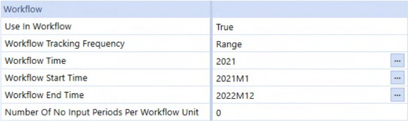
Figure 3.39
Simply set the Workflow Time, Start Time, and End Time to the very limits of a possible Plan, in this case 2021 through 2022.
Core Planning II – Command and Control the Cube › Shattering Scenario Workflow Shibboleths › The Multi-Year Home On The Range
It Just Works
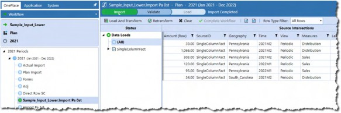
Figure 3.40 2021M2 and 2022M1 were both loaded in a single process.
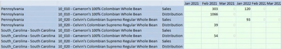
Figure 3.41 Direct Load works as well – note the six rows loaded.
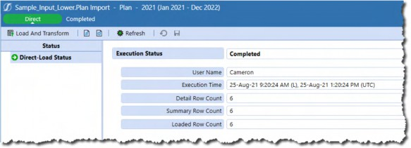
Figure 3.42
Core Planning II – Command and Control the Cube › Shattering Scenario Workflow Shibboleths
What To Do and Where
Of the three most commonly used Workflow Tracking Frequencies – All Time Periods, Yearly, and Range – multi-month Plans must use Yearly or Range. The other Workflow frequencies: Monthly, Quarterly, and Half Yearly behave similarly to All Time Periods and Yearly when it comes to data loads outside their time range, and are thus unsuitable except within very specialized circumstances.
Core Planning II – Command and Control the Cube › Shattering Scenario Workflow Shibboleths › What To Do and Where
Yearly
A Yearly frequency is a good fit for 12-month Plans for two reasons: all 12 or fewer months can be loaded within the Workflow, and on year change, no modification to the Scenario properties are required.
Core Planning II – Command and Control the Cube › Shattering Scenario Workflow Shibboleths › What To Do and Where
Range
A Range frequency must be the only option for 12 or more period Plans because it can load beyond the current Workflow year. What it cannot do is modify Workflow Time, Workflow Start Time, or Workflow End Time once any sort of Workflow has been processed.
On calendar year change, this becomes problematic because code and processes that rely on Workflow settings cannot function properly. Even if the Application properties Allow Loads Before Workflow View Year and Allow Loads After Workflow View Year are both set to True – thus allowing data loads outside of the defined Workflow Time range – Workflow Time itself becomes out of date. If the working Plan Scenario cannot be incremented on calendar year change, the only approach then is to have a monthly archive and yearly reset process.
Core Planning II – Command and Control the Cube
Controlling Scenarios
Apart from pure-Plan Budget Scenarios, Planning Scenarios are a mix of already-occurred (Actual) and predicted (Plan or Forecast) business activity. As the year advances, the Plan data must be cleared, replaced with Actual numbers, and then locked so that the Planner cannot change closed months.
No matter the mix of Actual and Plan data, most organizations keep archival copies of Planning data.
To support these requirements of data loading, locking, inputting, and archiving, there are two common Scenario management patterns:
Core Planning II – Command and Control the Cube › Controlling Scenarios
Working Forecast
A working Forecast Scenario, (e.g., Plan) is used consistently in Reports, data loads, Quick Views, Cube Views, and Data Management Steps; wherever a Scenario must be used, that single Scenario is employed.
Archive Scenarios are set to read-only by having the Read and Write Data Group, Calculate From Grids Group, and Manage Data Group set to Administrators. As the whole purpose of the archive Scenario is to allow Planners to review prior Forecasts, the Read Data Group should be set to Everyone.
Assuming new July Actuals are available and loaded into the Actual Scenario, and the working Forecast Scenario is called “Plan”, this Method requires the following steps:
Use a Data Management Data Copy or Custom Calculate step and subsequent Consolidate/Aggregate step to archive the working Forecast Plan to a selected historical Scenario.
Clear out July in the Plan Scenario via a Custom Calculate Finance Business Rule or Data Management’s Clear Data function.
Load the new July Actual data into Plan, either through a Custom Calculate Finance Business Rule or Data Management’s Copy Data function.
Consolidate/Aggregate Plan.
Increment the Plan’s No Input Periods number to seven to prevent Planner input/data loads to the new Actual month and its predecessors.
The data movement can be stitched together in a Data Management Sequence, although the Scenario No Input Periods property update must be performed manually.
This approach brings a key advantage of stability, clarity, and comprehension. OneStream objects and Planners work with the Plan Scenario, and no other, regardless of its time span of one year or many.
Core Planning II – Command and Control the Cube › Controlling Scenarios
Rolling Forecasts
| Note: This section does not address the notion of a perpetual Forecast that moves in time across months and years, but instead an outline of versioning single year Forecast Scenarios through a controlled change of the Forecast Scenario. |
This approach uses a series of predetermined Forecast Scenarios that are archives in themselves, e.g., 1+11 Forecast is the working Forecast Scenario in the month of February, representing January Actual data and 11 months of Plan.
As the calendar year progresses, the Scenario changes with it, i.e., if February’s Plan is the 1+11 Forecast Scenario, so then March’s will be 2+10 Forecast, and April’s 3+9 Forecast. By April, the 1+11 Forecast and 2+10 Forecast Scenarios are locked via Scenario Security Group assignments.
Removing the need to copy a standard Working Forecast to an archive Scenario comes at the cost of User comprehension and flexibility. What is the current Forecast if the Forecast name changes every month? What happens to Quick Views that are hard-coded to 6+6 Forecast as the working Forecast when that Scenario is now 8+4 Forecast?
Confusion aside, processing Actual data has fewer steps and gets triggered (as with the Working Forecast approach) by the availability of Actual data. Assuming that the No Input Periods have been defined in the Forecast periods and using 6+6 Forecast as the starting Scenario, the process is as follows:
Use a Data Management Copy Data or Custom Calculate step to copy old Actual and current Plan from the current to the new Forecast Scenario 7+5 Forecast.
Set 6+6 Forecast’s Read and Write Data Group, Calculate From Grids Group, and Manage Data Group properties to Administrators or Nobody. This Scenario is now an archived Forecast Scenario.
Clear out July in the 7+5 Forecast Scenario.
Copy July’s Actuals into the now-current working Forecast (No Input Periods do not constrain Copy Data or Finance Business Rules).
Aggregate the working Forecast Scenario 7+5 Forecast.
As with the Working Forecast approach, data movement can be automated through Data Management Sequences. Scenario Security Group settings must be performed manually or via custom code.
The potential for confusion around just what the current Forecast Scenario is, within the range of possible Scenarios is high, particularly when Excel and its Quick Views are heavily used.
Core Planning II – Command and Control the Cube › Controlling Scenarios › Rolling Forecasts
You Pays Your Money, and You Takes Your Chances
Although either approach to Scenario data movement is valid, the advantage of having a constant working Forecast Scenario makes it – in the eyes of your author at least – the optimal approach.
However, there is a problem with both approaches that Workflow and No Input Periods cannot resolve.
Core Planning II – Command and Control the Cube › Controlling Scenarios
Strives For Greatness, but Never Quite Makes It
In the Principles Chapter, the FP&A Live In Excel. Deal With It. section briefly mentions how Quick Views do not respect Workflow Time restrictions. This functionality (or lack of it) is important both within the scope of Workflow and outside of it.
To review, for example, completing Workflow on a Cube View locks data.
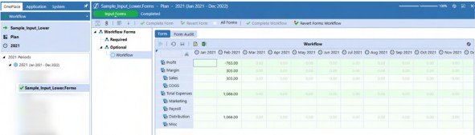
Figure 3.43 It does not in Excel or the OneStream Spreadsheet.
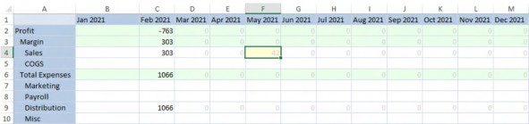
Figure 3.44
A send of data in the Quick View results in new data in the Cube View, despite its completed Workflow status.
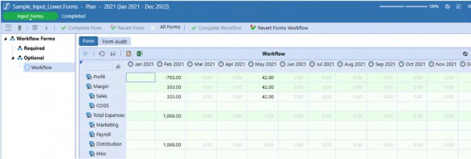
Figure 3.45
Given the need for ad hoc analysis and adjustment, we must accept that in Planning (and indeed all OneStream) applications, Workflow does not completely control the open and closed status of data, including periods in a working Forecast model with what should be closed Actual periods.
Core Planning II – Command and Control the Cube › Controlling Scenarios › Strives For Greatness, but Never Quite Makes It
Number of No Input Periods per Workflow Unit
Actual periods within a working Forecast Scenario can be closed to input and data loads through the No Input Periods setting.
Setting No Input Periods to 5 closes 2022M1 through 2022M12 in both Cube Views and Quick Views.
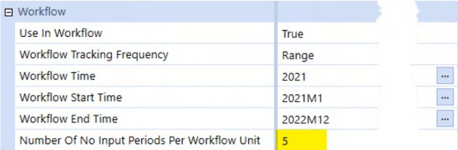
Figure 3.46
This is manifested in Cube Views:
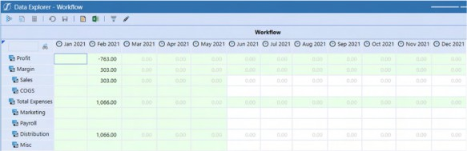
Figure 3.47
As well as Quick Views:
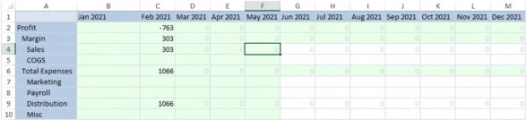
Figure 3.48
Core Planning II – Command and Control the Cube › Controlling Scenarios › Strives For Greatness, but Never Quite Makes It
Outside Workflow
Data that is outside Workflow is not controlled by No Input Periods. Periods prior to the current Workflow scope should be – whether they represent Actual data or some version of Forecast – closed as they have already occurred. Periods that are after the Workflow Time should also not be open for input to prevent Planner error.
The below Quick View illustrates open periods in 2020 and 2023 despite a Scenario that has a Range Workflow Start and End Time of 2021M1 to 2022M12.
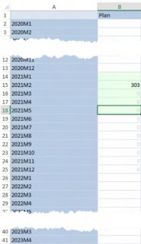
Figure 3.49
Core Planning II – Command and Control the Cube › Controlling Scenarios › Strives For Greatness, but Never Quite Makes It › Outside Workflow
Taking a Slice Out of Periods
Slice Security, also known as Data Cell Access Security, can – for Planners only, not Administrators – lock periods outside of Workflow.
By setting the Access Level to Read Only in an initial Category and then defining a Time Member Filter of T#2020.Base and T#2023.Base in the Category before and after, those periods are closed.
Figure 3.50
Neviana, a Planner in C&CCC’s FP&A group, cannot edit 2020 or 2023; 2021M6 through 2022M12 remain open.
Figure 3.51
Core Planning II – Command and Control the Cube › Controlling Scenarios › Strives For Greatness, but Never Quite Makes It › Outside Workflow › Taking a Slice Out of Periods
Does Not Compute
Slice Security does not apply to Members of the Administrators security group, of which Cameron is a Member.
Figure 3.52
Given that Administrators are in the class of User most likely to go outside of the Workflow in the course of application maintenance, good data quality demands that it be locked. If Workflow does not lock the periods, and Slice Security fails as well, how can this be done?
Core Planning II – Command and Control the Cube
On No Condition
The answer is Conditional Input as it will lock data for all Users, Planners, and Administrators alike, and affects human input through Cube Views and Quick Views as well as data loads.
Conditional Input Rules can be applied in two ways: via a Finance Business Rule attached to the Cube, or Cube Data Cell Conditional Input filters; both result in the same data security.
Given the same functionality, generally identical performance, and very different technical approach, determining which approach is best is rooted in philosophy: is it better to drive security through a code-dependent model or via a sequence of Member Filter definitions? OneStream often provides many ways to achieve the same thing with varying levels of effort and opportunities for customization – Conditional Input is one of those. The exercise of understanding the advantages and tradeoffs of the two techniques is an exemplar of the practice OneStream practitioners must exercise if we are to develop superior OneStream applications in security and all other product aspects.
Following the theme of more than one way to perform an action in OneStream, the following Conditional Input examples can also be used in lieu of the No Input Periods Scenario property. If Conditional Input is employed, it is likely that the Number of No Input Periods Per Workflow Unit Scenario property is redundant.
The use case is simple: a Literal Parameter defines the beginning of read-write periods within a Range Workflow Tracking Frequency. If the period accessed is between the start of the read-write periods and the end of the Workflow range, the data is read-write; otherwise, it is read-only.
Core Planning II – Command and Control the Cube › On No Condition
Finance Business Rule
A note about the Finance Business Rule approach: execution speed relies on data scope and code quality. Unlike the code-free approach of Cube Data Access, performance is in the hands of the developer.
Core Planning II – Command and Control the Cube › On No Condition › Finance Business Rule
ConditionalInput
ConditionalInput is a Finance Business Rule that is attached to the Cube. It runs for every cell that is displayed on a Cube View or Quick View as well as every record in a data load, hence the comment about the importance of efficient code.
The Business Rule must:
Run on Cube access, cf. the above.
Interrogate
api.FunctionTypeand then check to see if the
FinanceFunctionType.ConditionalInput is True.
3. Conditional Input should fire only if the Scenario name is
ForecastScenario_CI_Fin_BR.
Read the first read-write period from a Literal Parameter.
Grab the Workflow Tracking Frequency start and stop periods.
Interrogate the current POV Time period.
Compare the parameter and the POV Time periods.
If the POV Time period is between the start and stop periods and less than the start period, return
ConditionalInputResultType.NoInput.If the POV Time period is between the start and stop periods and greater than the start period, return
ConditionalInputResultType.Default. As the Scenario’s Read and Write Data Group is set to Everyone, the valid Time periods will be read-write.
Core Planning II – Command and Control the Cube › On No Condition › Finance Business Rule › ConditionalInput
Firing ConditionalInput
For CondtionalInput to run, it must be attached to the Cube to execute on retrieval. This book recommends running Finance Business Rules through Custom Calculate Data Management Steps precisely because they are focused in their scope and rely on Planner-driven timing. However, in the case of Conditional Input, the opposite must happen – the Rule must fire constantly.
Figure 3.53
Core Planning II – Command and Control the Cube › On No Condition › Finance Business Rule › ConditionalInput
Code
Core Planning II – Command and Control the Cube › On No Condition › Finance Business Rule › ConditionalInput › Code
Test for ConditionalInput
By default. Finance Business Rules test for seven different kinds of FinanceFunctionType. This Business Rule fires for every data cell and should not calculate anything other than that cell’s Conditional Input status, hence the test for the Function Type.
Select Case api.FunctionType
Case Is = FinanceFunctionType.ConditionalInputCore Planning II – Command and Control the Cube › On No Condition › Finance Business Rule › ConditionalInput › Code
Test For Scenario
The ConditionalInput Business Rule then tests for a Scenario called “Plan_CI_Fin_BR” but could easily read the current Workflow’s Scenario or read a Literal Parameter. Within the context of Planning applications, Conditional Input makes the most sense when applied to the working Forecast Scenario. Keep in mind that archived Scenarios will be set to read-only for everyone.
Dim strPOVScenario As String = api.Pov.Scenario.Name Dim strForecast As String = "Plan_CI_Fin_BR"
If strPOVScenario.XFEqualsIgnoreCase(strForecast) ThenCore Planning II – Command and Control the Cube › On No Condition › Finance Business Rule › ConditionalInput › Code
Determining The Current Time POV And Start/Stop Periods
The Literal Parameter ForecastMonth holds the current Forecast month: 2021M6.
Figure 3.54
That month period is stored as an integer value along with the Start and End Time of the Range Workflow.
OneStream stores Time in a YYYYMm/YYYYMmm format, (e.g., 2021M1 through 2021M12). That difference in month number length makes string ordinal testing impossible (2021M10 is greater than 2021M1 but less than 2021M2). The function funcIntegerTime enables precedence testing by converting string period names to integers. Private functions reside outside the Public Function Main but in the same Business Rule.
Dim intForecastTime As Integer = funcIntegerTime(BRApi.Dashboards.Parameters.GetLiteralParameterValue(s i, False, "ForecastMonth"))
Dim intPOVTime As Integer = funcIntegerTime(api.Pov.Time.Name) Dim intStartTime As Integer = funcIntegerTime(TimeDimHelper.GetNameFromId(api.Scenario.GetWorkflowSt artTime(ScenarioDimHelper.GetIdFromName(si, strForecast))))
Dim intEndTime As Integer = funcIntegerTime(TimeDimHelper.GetNameFromId(api.Scenario.GetWorkflowEn dTime(ScenarioDimHelper.GetIdFromName(si, strForecast))))funcIntegerTime
The private function funcIntegerTime converts the string Literal Parameter and Workflow Scenario times into integers using a YYYYMM format, (e.g., 2021M1 becomes 202101 and 2021M10 becomes 202110).
Private Function funcIntegerTime(ByVal strTime As String) As Integer Return TimeDimHelper.GetSubComponentsFromName(strTime).Year * 100 +
TimeDimHelper.GetSubComponentsFromName(strTime).Month End FunctionCore Planning II – Command and Control the Cube › On No Condition › Finance Business Rule › ConditionalInput › Code
Checking POV Time And Returning ConditionalInputResultType
The POV period of every cell can now be tested against the Start and End Workflow Time and the Start of Forecast Literal Parameter value.
ConditionalInputResultType.NoInput sets the cell to read-only. The default read-write Scenario property enables input and loading to open months.
Note the third Return – this is used to close down periods outside the Workflow range.
If intPOVTime >= intStartTime And intPOVTime <= intEndTime Then If intPOVTime < intForecastTime Then
Return ConditionalInputResultType.NoInput Else
Return ConditionalInputResultType.Default End If
Else
Return ConditionalInputResultType.NoInput End IfCore Planning II – Command and Control the Cube › On No Condition › Finance Business Rule › ConditionalInput › Code
Return Nothing
The above If…Then…Else test should catch all possible outcomes, but the OneStream compiler does not check those conditions. If the last Return Nothing does not exist, OneStream throws this warning:
Figure 3.55
A Return Nothing before the error trap satisfies the compiler’s code path value return requirement.
End If End Select
Return Nothing
Catch ex As Exception
Throw ErrorHandler.LogWrite(si, New XFException(si, ex)) End Try
End FunctionCore Planning II – Command and Control the Cube › On No Condition › Finance Business Rule › ConditionalInput › Code
The Code in Total
Core Planning II – Command and Control the Cube › On No Condition › Finance Business Rule › ConditionalInput
Results
Cameron, the Administrator (and everyone else in the Cube), cannot input data before 2021M5 and after 2022M12 in the Scenario Plan_CI_Fin_BR.
Figure 3.56
Core Planning II – Command and Control the Cube › On No Condition › Finance Business Rule › ConditionalInput
Conditional Input: More Prevalent Because It’s Better?
Per the beginning of this section, the performance of a Conditional Input Business Rule depends on code efficiency. Be careful when using the api.LogMessage Method as a moderately large Cube View or Quick View can result in hundreds if not thousands of Error Log messages with concomitant poor performance.
An admittedly unscientific survey of OneStream applications suggests that Finance Business Rules driving Conditional Input is common practice. Should it be… when there is another way to perform the same function?
Core Planning II – Command and Control the Cube › On No Condition
Data Cell Conditional Input
Conditional Input can be set at the Cube using simple (or complicated) Member Filters. The requirement to open up the Plan Scenario’s input after 2021M5 and not after 2022M12 requires just two steps.
Figure 3.57
Member Filters fire in sequential order, with any latter steps modifying the behavior of the former, creating AND, OR, and NOT conditions. These interact with implicit logical conditions within individual Member Filters. As the potential for sophisticated and powerful Conditional Input Rules is manifest, so too is the chance of incorrect data access. Be sure to extensively test the outcome of Conditional Input Rules in isolation and in concert with any Data Cell Access Security filters.
Core Planning II – Command and Control the Cube › On No Condition › Data Cell Conditional Input
Plan as Read-Only
The first Category step must make all of the Plan read-only; subsequent Category steps will open specific Time periods for input and loading within Plan.
Category filter scope drives Conditional Input behavior. Conditional Input filters test for data cells inside and out of the Member Filter, granting or restricting access as defined by behavior and access level.
Core Planning II – Command and Control the Cube › On No Condition › Data Cell Conditional Input › Plan as Read-Only
If Data Cell Is In Filter
The settings here, in combination with the Actual Member selection, will determine what happens to data within the Plan Scenario.
Behavior
There are eight different behaviors. For this use case, only Apply Access and Continue are required. This property will allow filter processing after the Member Filter has fired.
Access Level
Read Only and All Access are the only options for Access Level: Read Only affects the desired read-only state of Plan.
Core Planning II – Command and Control the Cube › On No Condition › Data Cell Conditional Input › Plan as Read-Only
If Data Cell Is NOT In Filter
Other Scenarios, at least in the case of this use case, will remain untouched.
Behavior
The default behavior of Skip Item and Continue will exclude other Scenarios from the scope of this filter.
Access Level
When Skip Item and Continue is specified, the only possible Access Level is Read Only. At first blush, this seems to suggest that data cells outside of this Member Filter will be read-only.
However, the Skip Item behavior means that this access is not applied.
Core Planning II – Command and Control the Cube › On No Condition › Data Cell Conditional Input › Plan as Read-Only
Member Filters
Unspecified Member Filters represent all data intersections in the Dimension. Member Filters with specific assignments define the scope of that Dimension’s data cells. These definitions (or lack thereof), in combination, define Conditional Input scope across the Cube.
Specifying just a Member Filter of S#Plan and nothing else in the Member Filter means that all other Dimensions are included in the scope of the Plan_ReadOnly Conditional Input Category; the act of specifying a single Member in a Dimension (Scenario), and no other, excludes the balance of that Dimension’s Members.
This Plan-only Data Cell Conditional Input filter…
Figure 3.58
…results in just the Plan as read-only; other Scenarios are limited by their own Conditional Input properties or are driven by Scenario read-write settings.
Figure 3.59
Core Planning II – Command and Control the Cube › On No Condition › Data Cell Conditional Input
Time as Read-Write
The Plan Scenario is now read-only. Opening 2021M6 to 2022M12 requires increasing the access to All Access and defining a Time Member Filter that includes those periods.
There is no need to define anything beyond Time as Data Cell Conditional Input filters are order-based: a Plan read-only filter followed by a Time read-write one is functionally an AND condition between the two Categories. No further filters are required.
| Note: This order-based functionality must be considered when the usage of Conditional Input is increased to other data cell definitions, (e.g., Conditional Input for Actual or Budget, etc.). Adding Plan to this filter would help restrict the access if there were other Conditional Input requirements. |
Core Planning II – Command and Control the Cube › On No Condition › Data Cell Conditional Input › Time as Read-Write
If Data Cell Is In Filter
Behavior
The same behavior – Apply Access and Continue – is used in Time’s filter as was used in Scenario’s. Member definitions in this filter will apply to all defined Member combinations.
Access
All Access is equivalent to read-write. If Data Cell Is NOT In Filter Behavior
As with Plan’s Conditional Input filter, data cells outside of this definition are skipped.
Access
The Skip Item and Continue property excludes other data cell combinations, keeping in mind that this Time filter is acting in conjunction with Plan’s.
Member Filters
Time is specified from 2021M6 through 2021M12 and 2022.Base.
Figure 3.60
The result is a read-write 2021M6 through 2022M12 with all other Time periods in Plan as read-only.
Figure 3.61
Core Planning II – Command and Control the Cube › On No Condition › Data Cell Conditional Input
Administering Data Cell Conditional Input
The Time Member Filter can be manually changed as needed. However, a more realistic use case is an administrative process that programmatically updates the Conditional Input filter.
This example shows a Dashboard with a period Combo box and Save button that updates a Literal Parameter that in turn drives the filter – items outside the scope of Conditional Input itself – and thus will not be covered.
Core Planning II – Command and Control the Cube › On No Condition › Data Cell Conditional Input › Administering Data Cell Conditional Input
Dashboard
Again, noting that only the Dashboard element that drives the actual update of the Conditional Input filter will be covered here, an administrative Dashboard to perform this function might look like this:
Figure 3.62
Your author is aware that he will likely never win awards for Dashboard design or aesthetics. Regardless of his artistic illiteracy, the above is sufficient.
Core Planning II – Command and Control the Cube › On No Condition › Data Cell Conditional Input › Administering Data Cell Conditional Input
Parameters
Two Literal Parameters drive the process: ForecastMonth and
ForecastScenario_CI_Ext_BR with the respective values of 2021M5 and Plan.
Core Planning II – Command and Control the Cube › On No Condition › Data Cell Conditional Input › Administering Data Cell Conditional Input
Button
btn_200_UpdateCI drives the Data Management Sequence Update_Conditional_Input through the Selection Changed Server Task and calls {Update_Conditional_Input}{} through the Selection Changed Server Task Arguments. The empty curly brace set at the end of the argument’s property is used to drive Data Management parameters which are not used in this example, hence their blank nature.
This Data Management Sequence has one step also named Update_Conditional_Input. The Extensibility Rule ConditionalInput_DataAccess can be run through an Execute Business Rule step if the ExtenderFunctionType.ExecuteDataMgmtBusinessRuleStep is enabled in the Extender Rule and by launching it directly if the ExtenderFunctionType.Unknown is enabled.
Core Planning II – Command and Control the Cube › On No Condition › Data Cell Conditional Input › Administering Data Cell Conditional Input
Data Management Step
Extensibility Rules are not run through Custom Calculate Steps as Finance Business Rules are, but instead are run via an Execute Business Rule Step Type.
Figure 3.63
The Conditional Input use case shall use the ConditionalInput_DataAccess Rule.
Figure 3.64
Core Planning II – Command and Control the Cube › On No Condition › Data Cell Conditional Input › Administering Data Cell Conditional Input
Business Rule
ConditionalInput_DataAccess must perform the following steps to change the Conditional Input filter:
Test to make sure the Rule is run from a Data Management Step.
Instantiate the Cube’s ID and Conditional Input data access Type.
Get the Literal Parameters’ values.
Define the Time periods to be updated.
Grab the Scenario’s Workflow Tracking Frequency end range; the Start Time is based on the Literal Parameter
ForecastMonth.Define the Time periods by looping from the Forecast month to M12 to create a string list of the Forecast month’s outstanding Time periods. Loop from the year after the Forecast month’s year and append
.Baseto the year within the Time period string list.
Loop the Data Cell Conditional Input Categories for the
Plan_ReadWritefilter. When the category name isPlan_ReadWrite, update the Time Member Filter with the Time period string list.Update the
InsertOrUpdateCubeDataAccessTimestampand
InsertOrUpdateCubesCacheTimestamp caches to persist the filter change.
Run From Data Management?
This Case statement ensures that the Rule is being run from a Data Management Step.
Select Case args.FunctionType
Case Is = ExtenderFunctionType.ExecuteDataMgmtBusinessRuleStep.
.
.
End SelectInstantiate
Get the Cube ID and the Conditional Input Access Type.
Dim intCubeID As Integer = BRApi.Finance.Cubes.GetCubeInfo(si, "Sample").Cube.CubeId
Dim objConditionalInputAccessType As CubeDataAccessType = CubeDataAccessType.DataCellConditionalInputParameters
Note that the ForecastScenario_CI_Ext_BR parameter could have been hard-coded as a string.
Dim strForecastTime As String = BRApi.Dashboards.Parameters.GetLiteralParameterValue(si, False, "ForecastMonth")
Dim strForecast As String = BRApi.Dashboards.Parameters.GetLiteralParameterValue(si, False, "ForecastScenario_CI_Ext_BR")Time
The Rule needs to identify the Start and End Time of the Conditional Input range. intStartYear could have used the BRApi.Finance.Scenario.GetWorkflowStartTime Method to get the Start Time instead of reading the ForecastMonth Literal Parameter. Note that VB.Net will convert a number to an Integer even if it is typed as String.
Dim intStartYear As Integer = Left(strForecastTime, 4) Dim intEndYear As Integer =
TimeDimHelper.GetYearFromId(BRApi.Finance.Scenario.GetWorkflowEndTime( si, ScenarioDimHelper.GetIdFromName(si, strForecast)))Two Time scope definitions are required: one to handle the future months in the current year based on the start month, and a second to contain all the periods in the second or greater years.
The first loop builds a Time Member string from YYYYM1 through YYYYM12 and assigns it to the string list lstFutureMonths.
Dim lstFutureMonths As New List(Of String)
For intCYMonths As Integer = Right(strForecastTime,2).Replace("M","")
To 12
lstFutureMonths.Add(Left(strForecastTime,4) & "M" & intCYMonths) NextThe second loops from the second year to the last one, adding YYYY.Base as required to lstFutureMonths.
For intFYMonths As Integer = intStartYear + 1 To intEndYear lstFutureMonths.Add(intFYMonths & ".Base")
NextUpdate
The Categories in the Cube Data Cell Conditional Input properties are now looped and tested so that only the Category Plan_ReadWrite is updated. The Time Member Filter is updated with a comma-delimited string from the lstFutureMonths string list.
The FinanceTimeStamps.InsertOrUpdateCubeDataAccessTimestamp and FinanceTimeStamps.InsertOrUpdateCubesCacheTimestamp Methods force the Data Access caches to refresh.
Using dbConn As DbConnInfo = BRApi.Database.CreateApplicationDbConnInfo(si)
For Each objCubeDataAccessItem As CubeDataAccessItem In CubeDataAccessDbAccess.ReadCubeDataAccessItems(dbConn, intCubeID, objConditionalInputAccessType)
If objCubeDataAccessItem.Category.XFEqualsIgnoreCase("Plan_ReadWrite")
Dim updatedAccessItem As New CubeDataAccessItem(objCubeDataAccessItem)
updatedAccessItem.MemberFilters.Time = "T#" & String.Join(", T#", lstFutureMonths)
CubeDataAccessDbAccess.InsertOrUpdateCubeDataAccessRow(dbConn, updatedAccessItem)
End If Next
FinanceTimeStamps.InsertOrUpdateCubeDataAccessTimestamp(dbConn, DateTime.UtcNow)
FinanceTimeStamps.InsertOrUpdateCubesCacheTimestamp(dbConn, DateTime.UtcNow)
End UsingNote: CubeDataAccessDBAccess is not an exposed object and is liable to change by OneStream without warning. |
Core Planning II – Command and Control the Cube › On No Condition › Data Cell Conditional Input
Change to 2021M3
Executing the Extensibility Rule through the Dashboard results in the Time Member Filter updated to allow read-write access from 2011M3 through 2022M12.
Figure 3.65
Core Planning II – Command and Control the Cube › On No Condition › Data Cell Conditional Input
Conditional Input Materialized In Excel
The Time Member Filter has been updated to start at 2021M3, extends through 2021M12, and then adds 2022.Base. A Quick View query shows that the range of open periods has changed.
Figure 3.66
Core Planning II – Command and Control the Cube › On No Condition › Data Cell Conditional Input › Conditional Input Materialized In Excel
The Code In Total
Core Planning II – Command and Control the Cube › On No Condition
Two Paths to the Same Place
The Conditional Input functional result from the Finance Business Rule and Data Cell Conditional Input Methods is the same; the approaches differ sharply in their implementation. The true difference is that the Finance Business Rule Conditional Input is code that a OneStream developer must write, and the Data Cell Conditional Input is free of code.
The above Extensibility Rule is not required to use Data Cell Conditional Input. It merely facilitates the pre-Plan cycle administrative tasks.
Is one better than the other? If beauty is said to be in the eye of the beholder, solution elegance is where the practitioner finds it. Your author prefers an easy and clear visual indication of how Conditional Input is defined as manifested with the Cube property Data Access Conditional Input. You must decide what is most appropriate for your application on the basis of clarity, performance, and flexibility.
Core Planning II – Command and Control the Cube
Slice Data Access
Conditional Input controls data within and without Workflow. However, it is (at best) a very blunt ax because it does not assign security by group; read or write access is for all Users in a OneStream application. What is needed is security that works in concert with Conditional Input’s absolute access to create a User-specific slice of security. As was hinted at, at the beginning of the Conditional Input section, Data Cell Access Security – aka Slice Security – can do just that.
It is important to note that OneStream Slice Security allows AND, NOT, and OR security conditions, both explicit and implicit. Its sequentially additive nature must be considered when determining security as it is easy to get lost in the filtering order of operations.
Core Planning II – Command and Control the Cube › Slice Data Access
Security at AVBS
C&CCC’s FP&A group divides its Planning responsibility by geography and product. Planners who do not have responsibility by product or geography cannot see the data. In the real world, security this granular is an exception, but the coffee business is cutthroat, and all financial information is on a need-to-know basis.
Core Planning II – Command and Control the Cube › Slice Data Access › Security at AVBS
C&CCC’s Planning Security Requirements
Natalie, the Vice President of Finance, monitors and plans for all regions and products.
Jessica, the analyst for the West, can plan for West and all products.
Amy, the analyst for the Midwest, can plan for Midwest and all products.
Neviana, the analyst for the East, can plan for East and all products.
Sandra, the analyst for the South, can plan for South and all products.
Tiffany, a core market and strategic product analyst, must be able to:
Plan in East for Whole Bean and Ground Coffee but not their decaffeinated products nor see those product categories’ totals.
Plan in West for Decaf but no other, nor view decaffeinated products’ Parent product totals.
Core Planning II – Command and Control the Cube › Slice Data Access
The Role of Groups
A simple rule: never apply security directly to a Username because Planners change, whether that be a promotion, taking leave, or resigning their position. All security assignments should be by group, even if a group has a single Member. As Planners come and go, group membership is the only maintenance point instead of examining and modifying Dimensions, Conditional Input, Data Access, Workflow, and other artifacts.
Core Planning II – Command and Control the Cube › Slice Data Access › The Role of Groups
Inherit Upwards
Just as children inherit from their ancestors, so too do OneStream security groups. If the group AVBS grants access to the application AVBS, the groups AVBS_West, AVBS_Mid_West, AVBS_East, and AVBS_South inherit application access by being Child groups. Neviana, a Child User of AVBS_East, gains access to the application because she inherits the access through AVBS_East, which is a Child of AVBS.
Figure 3.67
Core Planning II – Command and Control the Cube › Slice Data Access › The Role of Groups
Application and Cube Access
The AVBS Parent group provides OpenApplication, ModifyData, and ManageData rights to the Application AVBS for non-Administrators.
Figure 3.68 AVBS also provides access to the Cube Sample.
Figure 3.69
Real-world security group dependencies can be confusing. If possible, try to use naming conventions that indicate familial relationships. Map out an application’s security design before creating groups and assigning Users.
Core Planning II – Command and Control the Cube › Slice Data Access
Two Axes of Planning Security
Core Planning II – Command and Control the Cube › Slice Data Access › Two Axes of Planning Security
Entity/Geography
Entity – Geography in the case of AVBS – security drives read/write access by individual Entity. There are no hierarchical functions that assign, (e.g., read-write security at East does not apply to Pennsylvania, New Jersey, New York, or Delaware).
Entities have three kinds of Member security:
A single Display Member Group (metadata)
Two Read Data Groups
Two Read and Write Groups
Use Cube Data Access Security (Boolean value for Data Access/Slice Security)
Cube Data Cell Access Categories (Slice Security by category name)
Cube Conditional Input Categories (Conditional Input by category name)
Cube Data Management Access Categories (Data Management access by category name)
This use case will not incorporate Display Member Group or Entity-specific Category security but will instead focus on the mandatory display, read, and read/write security types in conjunction with Data Cell Access that applies to all Entities.
AVBS’ security groups map to their similarly named Entity, e.g., AVBS_East applies to East and its descendants.
Figure 3.70
Natalie must be a Member of all of the security groups to get access to their Entities as well as
AVBS_Total_Geography to give her full access to the Entity Dimension.
Core Planning II – Command and Control the Cube › Slice Data Access › Two Axes of Planning Security
Data Access/Slice Security
Where Entity security exists in isolation, (i.e., security exists on a Member-by-Member basis), Slice Security is additive in that it applies in steps (or slices) of access, with latter steps building on the former ones. Access is also controlled within the Category’s Member Filter by applying Member selections in dimensional Member Filters. Member Filters support hierarchical functions.
This combination of access, Category order, and Member Filter selections within Categories, combine to affect OneStream Slice Security’s AND, OR, and NOT logical conditions. Care must be taken when designing Slice Security because of the interactions between Categories.
Core Planning II – Command and Control the Cube › Slice Data Access › Two Axes of Planning Security › Data Access/Slice Security
UD1/Product and Entity/Geography
Product groups in AVBS have a twofold purpose: access to Products, and where specified, logical
AND combinations of Geography and Product.
Figure 3.71
Core Planning II – Command and Control the Cube › Slice Data Access › Two Axes of Planning Security › Data Access/Slice Security
Use Cube Data Access Security
This property must be set to True if Slice Security is to be applied to the Entity in question. Unpredictable results will ensue if this is left at the default of False.
Figure 3.72
Core Planning II – Command and Control the Cube › Slice Data Access › Two Axes of Planning Security › Data Access/Slice Security
The Anatomy of Data Cell Access
Like Conditional Input, Data Cell Security is a Cube-level property.
Core Planning II – Command and Control the Cube › Slice Data Access › Two Axes of Planning Security › Data Access/Slice Security
Assigning Security
Figure 3.73
Total_Products
For all Planners but Tiffany, the first two Categories of security are sufficient: Product_NoAccess denies access to all Planners through the in-built Everyone group, Product_Total opens up the Products Dimension for Planners in the Product_Total group. These two security definitions would not be necessary if her geographical and product restrictions did not exist because dimensional security is, by default, open to all for read/write access.
In the Product_Total Category, the Action property If User is NOT in Group and Data Cell is in Filter is set to Skip Item and Continue, thereby enabling subsequent security definitions to apply to Planners not in Product_Total. The UD1/Products Member Filter is set to U1#Total_Products.DescendantsInclusive, thus defining the scope of security to be all products except U1#No_Product and U1#Decaf, a Parent of an alternate hierarchy of decaffeinated coffee products. Tiffany’s access must be supplied by Categories three through five.
Core Planning II – Command and Control the Cube › Slice Data Access › Two Axes of Planning Security › Data Access/Slice Security › Assigning Security
Key Markets and Products
Categories three and four apply to East and the product categories Ground_Coffee and Whole_Bean. These two East Categories could have been combined into one via a common UD1/Products Member Filter but are separated for illustration.
Tiffany already has Entity access to East and its descendants through the AVBS_East group. Specifying E#East.DescendantsInclusive in these Categories executes an AND condition against the Ground_Coffee and Whole_Bean product families. If East was not specified, she would be able to access these products in West as she is also a Member of AVBS_West. Note also that Ground_Coffee_East uses a Member function to exclude the decaffeinated product U1#20_020 instead of an explicit list of products like Whole_Bean_East; both Methods are valid.
Data Cell Access Security uses the same dialog box as Data Cell Conditional Input Member Categories.
Figure 3.74
The West_Decaf Category provides read/write access to the region West and the shared Decaf product hierarchy. The Ground_Coffee_East and Whole_Bean_East Categories explicitly exclude their respective U1#20_020/100% Colombian Decaf and U1#10_030/ French Roast Regular Whole Bean Decaf decaffeinated products because Tiffany does not forecast those products in East. If West_Decaf was not in an AND condition between E#West and U1#Decaf, it would open up those decaffeinated products in East.
Figure 3.75
No_Product
Lastly, because U1#No_Product was not included in the initial denial of all access to
U1#Total_Products.DescendantsInclusive (it is a sibling), it is read/write for all Planners.
Core Planning II – Command and Control the Cube › Slice Data Access › Two Axes of Planning Security › Data Access/Slice Security › Assigning Security
The Complete Categories
When complete, the Categories appear as below.
Figure 3.76
Core Planning II – Command and Control the Cube › Slice Data Access › Two Axes of Planning Security › Data Access/Slice Security › Assigning Security
Three Views of Security
Natalie
As Vice President of Finance, Natalie has full access to all regions and products:
Figure 3.77
Amy
As the Planner for the Midwest, she has a more circumscribed view of just Mid_West and its descendants and access to all products.
Figure 3.78
Tiffany
Tiffany’s complex security is now manifested as read/write access in E#East to U1#Ground_Coffee and U1#Whole_Bean but not to the decaffeinated U1#20_020 and U1#10_030. In West, she has access to all descendants of U1#Decaf across U1#Ground_Coffee, U1#Whole_Bean, and U1#Filter.
Figure 3.79
Core Planning II – Command and Control the Cube › Slice Data Access
Security As You Like It
Access to data in OneStream can be as sophisticated or as simple as an application requires. It is multidimensional – both figuratively and literally – encompassing Entity and User-Defined Dimensions as well as being controlled by Conditional. An application’s valid data combinations can be defined explicitly or implicitly inherited through security definition order. The only downside to OneStream’s security model is its potential complexity, which is a function of requirements and design.
To confirm a security model’s design, OneStream practitioners should briefly create temporary dummy Accounts that fit required security profiles for testing in data-free application copies. These temporary Usernames must be deleted as quickly as possible, as must the application copy.
OneStream applications contain the key financial data of an organization. Not securing data externally (or indeed internally) is a professional, organizational, and possibly criminal failure of the highest order.
A last note about security during application implementations: the task of assigning security is often an afterthought, assigned to a junior practitioner because of its perceived non-technical nature. As this chapter’s Data Cell Conditional Input and Access Security use cases show, this belief is not true. Security’s importance is paramount, its design potentially complex, and the potential for error is high. Whoever is responsible for the security model must have it checked and double-checked.
Core Planning II – Command and Control the Cube
Command and Control
The theme of this chapter has been one of expanding functionality through XFBR Business Rules and constraining data access through Conditional Input and Cell Access security. Your authors have never seen a OneStream application that did not utilize both concepts. Both concepts are powerful and need careful consideration to enable the greatest and most secure OneStream application possible.
The Core I and this Core II chapters have focused on what is – after all – the core of OneStream applications: the Cube. The following chapters on Specialty Planning and Analysis go beyond the Cube into some of the key differentiators of OneStream from its Performance Management competitors. Much of the content is advanced in nature and – seemingly – orthogonal to OneStream Cube-based Planning applications. A careful examination of the following chapters will disabuse the skeptical of that notion by exploring, illustrating, and explaining the almost unlimited potential of the OneStream platform.